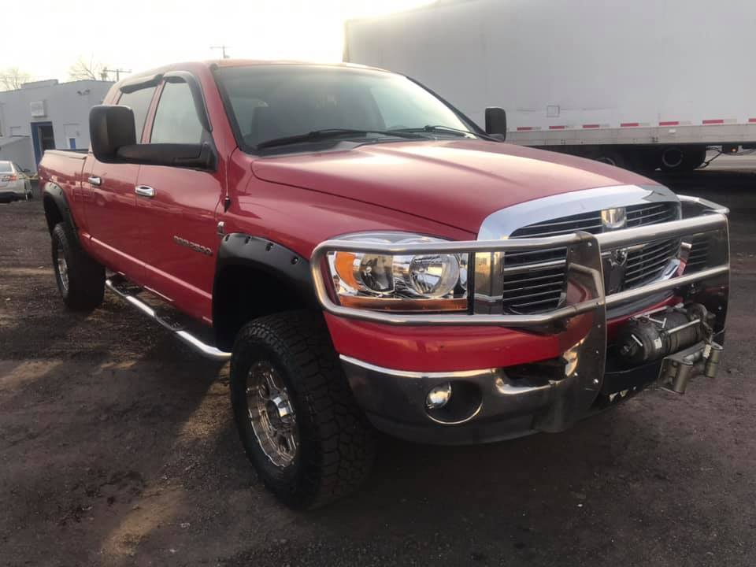
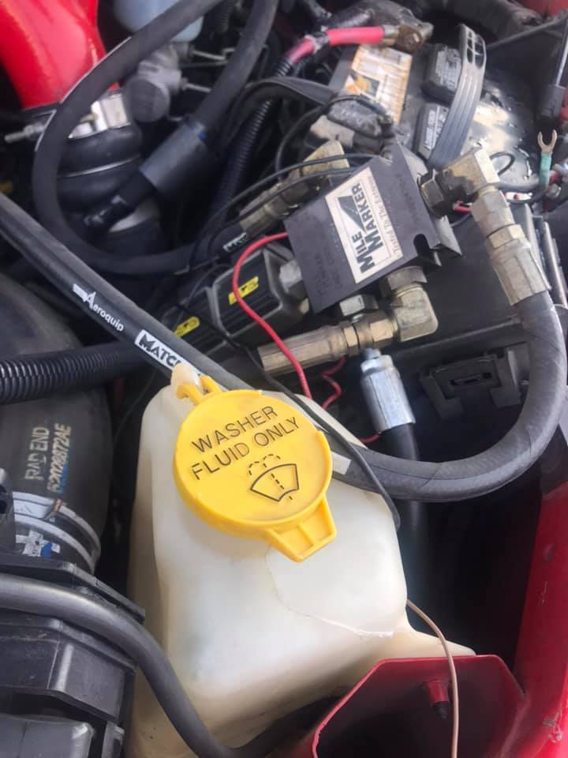
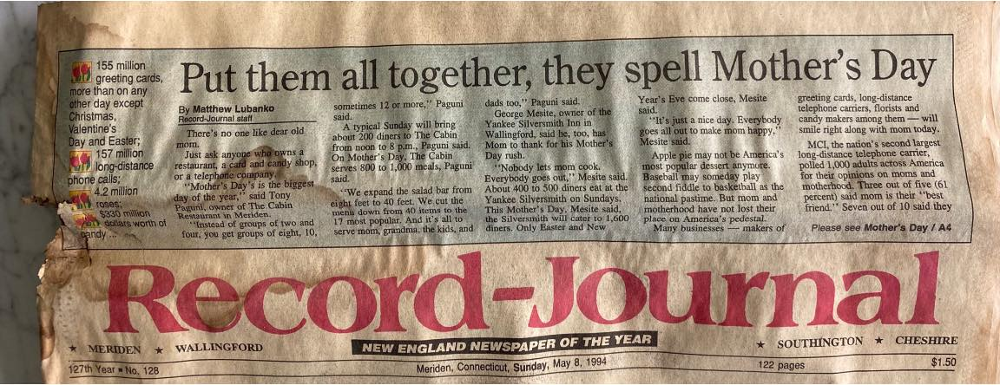

Major/minor repairs
From a small fix to a big job. Tell the shop what the vehicle is doing and let them take it from there.
Automotive repair shop · Meriden, CT
Major and minor repairs, routine maintenance and vehicle check-ups at 15 Chamberlain Hwy in Meriden, Connecticut. Call the shop, or ask for an estimate.
Sales & Service · Meriden, CT
Sales & Service
Everything below is work the shop describes on its own page, in its own words. If your problem isn't listed, call and describe it.
From a small fix to a big job. Tell the shop what the vehicle is doing and let them take it from there.
The scheduled work that keeps a vehicle on the road instead of on the lift. Call to book it.
Something feels off and you can't name it? Book a check-up — the shop's own term — and have it looked at before a small problem becomes a repair.
More than a drain and fill: the shop's own checklist covers fluid levels topped off, every light checked, coolant temperature range checked, and the exhaust, steering and suspension looked over. It also looks for anything that changed since the last visit.
Perfection Automotive also sells used vehicles and holds Connecticut DMV used dealer licence U7825. Call and ask what's available.
Fleet vehicles are part of the shop's regular workload, in its own words. Running a few work vehicles? Call and talk it through.
Not sure what it needs? Call and describe the symptoms.
Call (203) 376-5582From the shop's page
Photos the shop posted on its own Facebook page.


About the shop
Perfection Automotive, LLC is an automotive repair shop at 15 Chamberlain Hwy in Meriden, Connecticut. In the shop's own words: "In 2011, after more than twenty years in the industry, owner and automotive specialist, Wayne Lukonis, made his dream a reality."
The story starts earlier. In 1994 Wayne was preparing to graduate from H.C. Wilcox Technical High School "to embark on a life-long love affair with a career in the automotive industry," as he put it. Years later, during renovations at the shop, the team found a 1994 Record-Journal hidden in a wall — that's it in the photo.
Today the shop handles major and minor repairs, routine maintenance and vehicle check-ups, sells used vehicles under Connecticut DMV used dealer licence U7825, and shows up around Meriden: in 2024 it ran a fundraiser where "every dollar goes to the Meriden Lions Club."

What customers say
Very professional, very knowledgeable, and the name says it all, Perfection.. Wayne is trustworthy and a nice guy to work with. I travel 40 minutes to get to this shop …
I brought my jeep wrangler to another autobody shop knowing it was probably my heater core that needed to be flushed or replaced. Instead they failed to fix the issue. So I brought it to Perfection Automotive and had my heat back … Thank you so much Wayne finally enjoyable to drive in the cold again.
I was referred to Perfection Auto by a friend. And I had a decent amount of work done on my vehicle, and when I left Perfection Auto my vehicle felt brand new, it honestly felt like a different vehicle. …
Read the shop's Google reviews (opens in a new tab) (quotes read there on 15 October 2026)
Get in touch
There's no form — call with the year, make and model and what the vehicle is doing, or email the same details to Wayne. The shop's own page says to "contact us today to schedule an appointment for major/minor repairs, routine maintenance, vehicle check-ups, etc."
wayne@perfectionautoct.com
This site is a one-page brochure for Perfection Automotive, LLC. It sets no cookies, runs no analytics, loads no third-party scripts or fonts, and has no form or account, so it collects nothing about you. The phone and email links open your own phone or mail app; the directions, Facebook, BBB and review links take you to Google Maps, Facebook, BBB.org and Birdeye, which have their own privacy policies. The site is hosted on GitHub Pages, whose servers keep their own standard access logs.